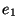
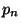
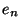
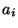
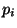
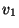
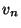

保罗格雷厄姆
约翰麦卡锡于1960年发表了一篇非凡的论文,他在这篇论文中对编程的贡献有如欧几里德对几何的贡献.1 他向我们展示了,在只给定几个简单的操作符和一个表示函数的记号的基础上, 如何构造出一个完整的编程语言. 麦卡锡称这种语言为Lisp, 意为List Processing, 因为他的主要思想之一是用一种简单的数据结构表(list)来代表代码和数据.
值得注意的是,麦卡锡所作的发现,不仅是计算机史上划时代的大事, 而且是一种在我们这个时代编程越来越趋向的模式.我认为目前为止只有两种真正干净利落, 始终如一的编程模式:C语言模式和Lisp语言模式.此二者就象两座高地, 在它们中间是尤如沼泽的低地.随着计算机变得越来越强大,新开发的语言一直在坚定地趋向于Lisp模式. 二十年来,开发新编程语言的一个流行的秘决是,取C语言的计算模式,逐渐地往上加Lisp模式的特性,例如运行时类型和无用单元收集.
在这篇文章中我尽可能用最简单的术语来解释约翰麦卡锡所做的发现. 关键是我们不仅要学习某个人四十年前得出的有趣理论结果, 而且展示编程语言的发展方向. Lisp的不同寻常之处--也就是它优质的定义--是它能够自己来编写自己. 为了理解约翰麦卡锡所表述的这个特点,我们将追溯他的步伐,并将他的数学标记转换成能够运行的Common Lisp代码.
开始我们先定义表达式.表达式或是一个原子(atom),它是一个字母序列(如 foo),或是一个由零个或多个表达式组成的表(list), 表达式之间用空格分开, 放入一对括号中. 以下是一些表达式:
foo () (foo) (foo bar) (a b (c) d)最后一个表达式是由四个元素组成的表, 第三个元素本身是由一个元素组成的表.
在算术中表达式 1 + 1 得出值2. 正确的Lisp表达式也有值. 如果表达式e得出值v,我们说e返回v. 下一步我们将定义几种表达式以及它们的返回值.
如果一个表达式是表,我们称第一个元素为操作符,其余的元素为自变量.我们将定义七个原始(从公理的意义上说)操作符: quote,atom,eq,car,cdr,cons,和 cond.
> (quote a) a > 'a a > (quote (a b c)) (a b c)
> (atom 'a) t > (atom '(a b c)) () > (atom '()) t
既然有了一个自变量需要求值的操作符, 我们可以看一下quote的作用. 通过引用(quote)一个表,我们避免它被求值. 一个未被引用的表作为自变量传给象 atom这样的操作符将被视为代码:
> (atom (atom 'a)) t
反之一个被引用的表仅被视为表, 在此例中就是有两个元素的表:
> (atom '(atom 'a)) ()
这与我们在英语中使用引号的方式一致. Cambridge(剑桥)是一个位于麻萨诸塞州有90000人口的城镇. 而``Cambridge''是一个由9个字母组成的单词.
引用看上去可能有点奇怪因为极少有其它语言有类似的概念. 它和Lisp最与众不同的特征紧密联系:代码和数据由相同的数据结构构成, 而我们用quote操作符来区分它们.
> (eq 'a 'a) t > (eq 'a 'b) () > (eq '() '()) t
> (car '(a b c)) a
> (cdr '(a b c)) (b c)
> (cons 'a '(b c)) (a b c) > (cons 'a (cons 'b (cons 'c '()))) (a b c) > (car (cons 'a '(b c))) a > (cdr (cons 'a '(b c))) (b c)
http://daiyuwen.freeshell.org/gb/rol/img1.png
...http://daiyuwen.freeshell.org/gb/rol/img2.png
) ...(http://daiyuwen.freeshell.org/gb/rol/img3.png
...http://daiyuwen.freeshell.org/gb/rol/img4.png
)) 的求值规则如下. p表达式依次求值直到有一个返回t. 如果能找到这样的p表达式,相应的e表达式的值作为整个cond表达式的返回值.
> (cond ((eq 'a 'b) 'first)
((atom 'a) 'second))
second 当表达式以七个原始操作符中的五个开头时,它的自变量总是要求值的.2 我们称这样 的操作符为函数.
http://daiyuwen.freeshell.org/gb/rol/img1.png
...http://daiyuwen.freeshell.org/gb/rol/img3.png
) e),其中http://daiyuwen.freeshell.org/gb/rol/img1.png
...http://daiyuwen.freeshell.org/gb/rol/img3.png
是原子(叫做 参数), e是表达式. 如果表达式的第一个元素形式如上((lambda ( http://daiyuwen.freeshell.org/gb/rol/img1.png http://daiyuwen.freeshell.org/gb/rol/img3.png http://daiyuwen.freeshell.org/gb/rol/img5.png http://daiyuwen.freeshell.org/gb/rol/img6.png
则称为函数调用.它的值计算如下.每一个表达式
http://daiyuwen.freeshell.org/gb/rol/img7.png
先求值,然后e再求值.在e的求值过程中,每个出现在e中的http://daiyuwen.freeshell.org/gb/rol/img8.png
的值是相应的http://daiyuwen.freeshell.org/gb/rol/img7.png
在最近一次的函数调用中的值.
> ((lambda (x) (cons x '(b))) 'a) (a b) > ((lambda (x y) (cons x (cdr y))) 'z '(a b c)) (z b c)如果一个表达式的第一个元素 f是原子且 f不是原始操作符
(f http://daiyuwen.freeshell.org/gb/rol/img5.png http://daiyuwen.freeshell.org/gb/rol/img6.png
并且f的值是一个函数(lambda (
http://daiyuwen.freeshell.org/gb/rol/img1.png
...http://daiyuwen.freeshell.org/gb/rol/img3.png
)),则以上表达式的值就是((lambda ( http://daiyuwen.freeshell.org/gb/rol/img1.png http://daiyuwen.freeshell.org/gb/rol/img3.png http://daiyuwen.freeshell.org/gb/rol/img5.png http://daiyuwen.freeshell.org/gb/rol/img6.png
的值. 换句话说,参数在表达式中不但可以作为自变量也可以作为操作符使用:
> ((lambda (f) (f '(b c))) '(lambda (x) (cons 'a x))) (a b c)
有另外一个函数记号使得函数能提及它本身,这样我们就能方便地定义递归函数.3 记号
(label f (lambda ( http://daiyuwen.freeshell.org/gb/rol/img1.png http://daiyuwen.freeshell.org/gb/rol/img3.png
表示一个象(lambda (
http://daiyuwen.freeshell.org/gb/rol/img1.png
...http://daiyuwen.freeshell.org/gb/rol/img3.png
) e)那样的函数,加上这样的特性: 任何出现在e中的f将求值为此label表达式, 就好象f是此函数的参数.假设我们要定义函数(subst x y z), 它取表达式x,原子y和表z做参数,返回一个象z那样的表, 不过z中出现的y(在任何嵌套层次上)被x代替.
> (subst 'm 'b '(a b (a b c) d)) (a m (a m c) d)我们可以这样表示此函数
(label subst (lambda (x y z)
(cond ((atom z)
(cond ((eq z y) x)
('t z)))
('t (cons (subst x y (car z))
(subst x y (cdr z))))))) 我们简记
f=(label
f (lambda (
http://daiyuwen.freeshell.org/gb/rol/img1.png
...http://daiyuwen.freeshell.org/gb/rol/img3.png
) e))为(defun f ( http://daiyuwen.freeshell.org/gb/rol/img1.png http://daiyuwen.freeshell.org/gb/rol/img3.png
于是
(defun subst (x y z)
(cond ((atom z)
(cond ((eq z y) x)
('t z)))
('t (cons (subst x y (car z))
(subst x y (cdr z)))))) 偶然地我们在这儿看到如何写cond表达式的缺省子句. 第一个元素是't的子句总是会成功的. 于是
(cond (x y) ('t z))
等同于我们在某些语言中写的
if x then y else z
> (cadr '((a b) (c d) e)) (c d) > (caddr '((a b) (c d) e)) e > (cdar '((a b) (c d) e)) (b)我们还用(list
http://daiyuwen.freeshell.org/gb/rol/img2.png
...http://daiyuwen.freeshell.org/gb/rol/img4.png
)表示(conshttp://daiyuwen.freeshell.org/gb/rol/img2.png
...(conshttp://daiyuwen.freeshell.org/gb/rol/img4.png
'()) ...).> (cons 'a (cons 'b (cons 'c '()))) (a b c) > (list 'a 'b 'c) (a b c)
现在我们定义一些新函数. 我在函数名后面加了点,以区别函数和定义它们的原始函数,也避免与现存的common Lisp的函数冲突.
(defun null. (x) (eq x '())) > (null. 'a) () > (null. '()) t
(defun and. (x y)
(cond (x (cond (y 't) ('t '())))
('t '())))
> (and. (atom 'a) (eq 'a 'a))
t
> (and. (atom 'a) (eq 'a 'b))
()
(defun not. (x)
(cond (x '())
('t 't)))
> (not. (eq 'a 'a))
()
> (not. (eq 'a 'b))
t
(defun append. (x y)
(cond ((null. x) y)
('t (cons (car x) (append. (cdr x) y)))))
> (append. '(a b) '(c d))
(a b c d)
> (append. '() '(c d))
(c d)
(defun pair. (x y)
(cond ((and. (null. x) (null. y)) '())
((and. (not. (atom x)) (not. (atom y)))
(cons (list (car x) (car y))
(pair. (cdr) (cdr y))))))
> (pair. '(x y z) '(a b c))
((x a) (y b) (z c))
(defun assoc. (x y)
(cond ((eq (caar y) x) (cadar y))
('t (assoc. x (cdr y)))))
> (assoc. 'x '((x a) (y b)))
a
> (assoc. 'x '((x new) (x a) (y b)))
new
(defun eval. (e a)
(cond
((atom e) (assoc. e a))
((atom (car e))
(cond
((eq (car e) 'quote) (cadr e))
((eq (car e) 'atom) (atom (eval. (cadr e) a)))
((eq (car e) 'eq) (eq (eval. (cadr e) a)
(eval. (caddr e) a)))
((eq (car e) 'car) (car (eval. (cadr e) a)))
((eq (car e) 'cdr) (cdr (eval. (cadr e) a)))
((eq (car e) 'cons) (cons (eval. (cadr e) a)
(eval. (caddr e) a)))
((eq (car e) 'cond) (evcon. (cdr e) a))
('t (eval. (cons (assoc. (car e) a)
(cdr e))
a))))
((eq (caar e) 'label)
(eval. (cons (caddar e) (cdr e))
(cons (list (cadar e) (car e)) a)))
((eq (caar e) 'lambda)
(eval. (caddar e)
(append. (pair. (cadar e) (evlis. (cdr e) a))
a)))))
(defun evcon. (c a)
(cond ((eval. (caar c) a)
(eval. (cadar c) a))
('t (evcon. (cdr c) a))))
(defun evlis. (m a)
(cond ((null. m) '())
('t (cons (eval. (car m) a)
(evlis. (cdr m) a))))) eval.的定义比我们以前看到的都要长. 让我们考虑它的每一部分是如何工作的.
eval.有两个自变量: e是要求值的表达式, a是由一些赋给原子的值构成的表,这些值有点象函数调用中的参数. 这个形如pair.的返回值的表叫做环境. 正是为了构造和搜索这种表我们才写了pair.和assoc..
eval.的骨架是一个有四个子句的cond表达式. 如何对表达式求值取决于它的类型. 第一个子句处理原子. 如果e是原子, 我们在环境中寻找它的值:
> (eval. 'x '((x a) (y b))) a
第二个子句是另一个cond, 它处理形如(a ...)的表达式, 其中a是原子. 这包括所有的原始操作符, 每个对应一条子句.
> (eval. '(eq 'a 'a) '())
t
> (eval. '(cons x '(b c))
'((x a) (y b)))
(a b c) 这几个子句(除了quote)都调用eval.来寻找自变量的值.
最后两个子句更复杂些. 为了求cond表达式的值我们调用了一个叫 evcon.的辅助函数. 它递归地对cond子句进行求值,寻找第一个元素返回t的子句. 如果找到了这样的子句, 它返回此子句的第二个元素.
> (eval. '(cond ((atom x) 'atom)
('t 'list))
'((x '(a b))))
list
第二个子句的最后部分处理函数调用. 它把原子替换为它的值(应该是lambda 或label表达式)然后对所得结果表达式求值. 于是
(eval. '(f '(b c))
'((f (lambda (x) (cons 'a x))))) 变为
(eval. '((lambda (x) (cons 'a x)) '(b c))
'((f (lambda (x) (cons 'a x))))) 它返回(a b c).
eval.的最后cond两个子句处理第一个元素是lambda或label的函数调用.为了对label 表达式求值, 先把函数名和函数本身压入环境, 然后调用eval.对一个内部有 lambda的表达式求值. 即:
(eval. '((label firstatom (lambda (x)
(cond ((atom x) x)
('t (firstatom (car x))))))
y)
'((y ((a b) (c d))))) 变为
(eval. '((lambda (x)
(cond ((atom x) x)
('t (firstatom (car x)))))
y)
'((firstatom
(label firstatom (lambda (x)
(cond ((atom x) x)
('t (firstatom (car x)))))))
(y ((a b) (c d))))) 最终返回a.
最后,对形如((lambda (
http://daiyuwen.freeshell.org/gb/rol/img1.png
...http://daiyuwen.freeshell.org/gb/rol/img3.png
) e)http://daiyuwen.freeshell.org/gb/rol/img5.png
...http://daiyuwen.freeshell.org/gb/rol/img6.png
)的表达式求值,先调用evlis.来求得自变量(http://daiyuwen.freeshell.org/gb/rol/img5.png
...http://daiyuwen.freeshell.org/gb/rol/img6.png
)对应的值(http://daiyuwen.freeshell.org/gb/rol/img9.png
...http://daiyuwen.freeshell.org/gb/rol/img10.png
),把(http://daiyuwen.freeshell.org/gb/rol/img1.png
http://daiyuwen.freeshell.org/gb/rol/img9.png
)...(http://daiyuwen.freeshell.org/gb/rol/img3.png
http://daiyuwen.freeshell.org/gb/rol/img10.png
)添加到环境里, 然后对e求值. 于是
(eval. '((lambda (x y) (cons x (cdr y)))
'a
'(b c d))
'()) 变为
(eval. '(cons x (cdr y))
'((x a) (y (b c d)))) 最终返回(a c d).
既然理解了eval是如何工作的, 让我们回过头考虑一下这意味着什么. 我们在这儿得到了一个非常优美的计算模型. 仅用quote,atom,eq,car,cdr,cons,和cond, 我们定义了函数eval.,它事实上实现了我们的语言,用它可以定义任何我们想要的额外的函数.
当然早已有了各种计算模型--最著名的是图灵机. 但是图灵机程序难以读懂. 如果你要一种描述算法的语言, 你可能需要更抽象的, 而这就是约翰麦卡锡定义 Lisp的目标之一.
约翰麦卡锡于1960年定义的语言还缺不少东西. 它没有副作用, 没有连续执行 (它得和副作用在一起才有用), 没有实际可用的数,4 没有动态可视域. 但这些限制可以令人惊讶地用极少的额外代码来补救. Steele和Sussman在一篇叫做``解释器的艺术''的著名论文中描述了如何做到这点.5
如果你理解了约翰麦卡锡的eval, 那你就不仅仅是理解了程序语言历史中的一个阶段. 这些思想至今仍是Lisp的语义核心. 所以从某种意义上, 学习约翰麦卡锡的原著向我们展示了Lisp究竟是什么. 与其说Lisp是麦卡锡的设计,不如说是他的发现. 它不是生来就是一门用于人工智能, 快速原型开发或同等层次任务的语言. 它是你试图公理化计算的结果(之一).
随着时间的推移, 中级语言, 即被中间层程序员使用的语言, 正一致地向Lisp靠近. 因此通过理解eval你正在明白将来的主流计算模式会是什么样.
在约翰麦卡锡的论文中,假用f来表示, 而不是空表. 我用空表表示假以使例子能在Common Lisp中运行. (fixme)
我略过了构造dotted pairs, 因为你不需要它来理解eval. 我也没有提apply, 虽然是apply(它的早期形式, 主要作用是引用自变量), 被约翰麦卡锡在1960年称为普遍函数, eval只是不过是被apply调用的子程序来完成所有的工作.
我定义了list和cxr等作为简记法因为麦卡锡就是这么做的. 实际上 cxr等可以被定义为普通的函数. List也可以这样, 如果我们修改eval, 这很容易做到, 让函数可以接受任意数目的自变量.
麦卡锡的论文中只有五个原始操作符. 他使用了cond和quote,但可能把它们作为他的元语言的一部分. 同样他也没有定义逻辑操作符and和not, 这不是个问题, 因为它们可以被定义成合适的函数.
在eval.的定义中我们调用了其它函数如pair.和assoc.,但任何我们用原始操作符定义的函数调用都可以用eval.来代替. 即
(assoc. (car e) a)能写成
(eval. '((label assoc.
(lambda (x y)
(cond ((eq (caar y) x) (cadar y))
('t (assoc. x (cdr y))))))
(car e)
a)
(cons (list 'e e) (cons (list 'a a) a)))
麦卡锡的eval有一个错误. 第16行是(相当于)(evlis. (cdr e) a)而不是(cdr e), 这使得自变量在一个有名函数的调用中被求值两次. 这显示当论文发表的时候, eval的这种描述还没有用IBM 704机器语言实现. 它还证明了如果不去运行程序, 要保证不管多短的程序的正确性是多么困难.
我还在麦卡锡的论文中碰到一个问题. 在定义了eval之后, 他继续给出了一些更高级的函数--接受其它函数作为自变量的函数. 他定义了maplist:
(label maplist
(lambda (x f)
(cond ((null x) '())
('t (cons (f x) (maplist (cdr x) f)))))) 然后用它写了一个做微分的简单函数diff. 但是diff传给maplist一个用
x做参数的函数, 对它的引用被maplist中的参数x所捕获.
6
这是关于动态可视域危险性的雄辩证据, 即使是最早的更高级函数的例子也因为它而出错. 可能麦卡锡在1960年还没有充分意识到动态可视域的含意. 动态可视域令人惊异地在Lisp实现中存在了相当长的时间--直到Sussman和Steele于 1975年开发了Scheme. 词法可视域没使eval的定义复杂多少, 却使编译器更难写了.
This document was generated using the LaTeX2HTML translator Version 2K.1beta (1.48)
Copyright © 1993, 1994, 1995, 1996, Nikos Drakos, Computer Based Learning Unit, University of Leeds.
Copyright © 1997, 1998, 1999, Ross Moore, Mathematics Department, Macquarie University, Sydney.
The command line arguments were:
latex2html -split=0 roots_of_lisp.tex
The translation was initiated by Dai Yuwen on 2003-10-24